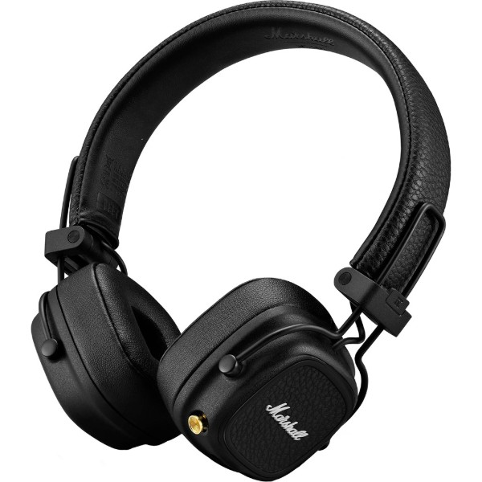
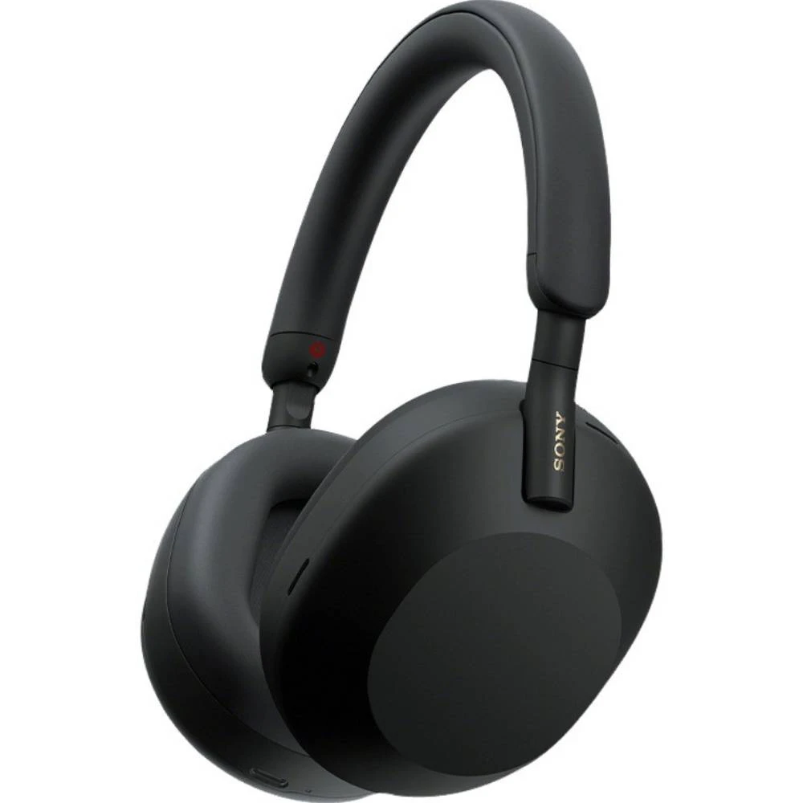
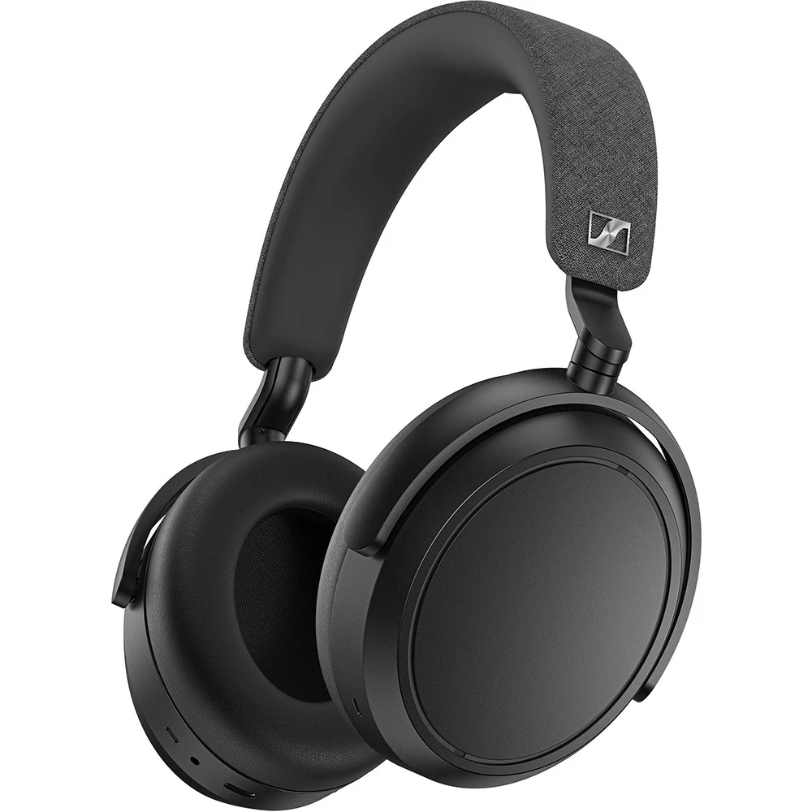
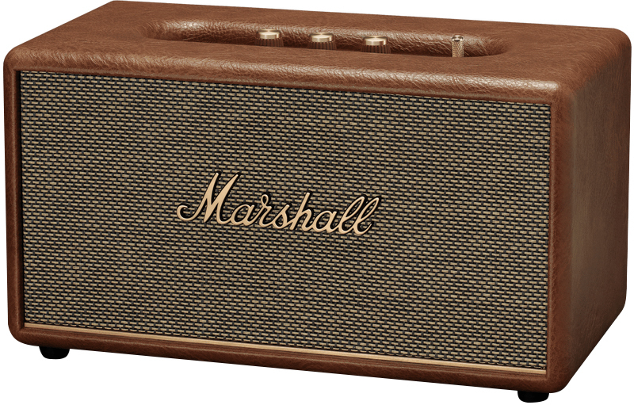
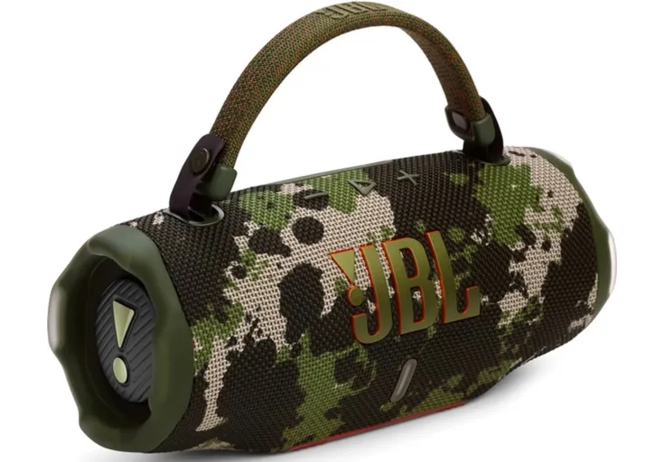
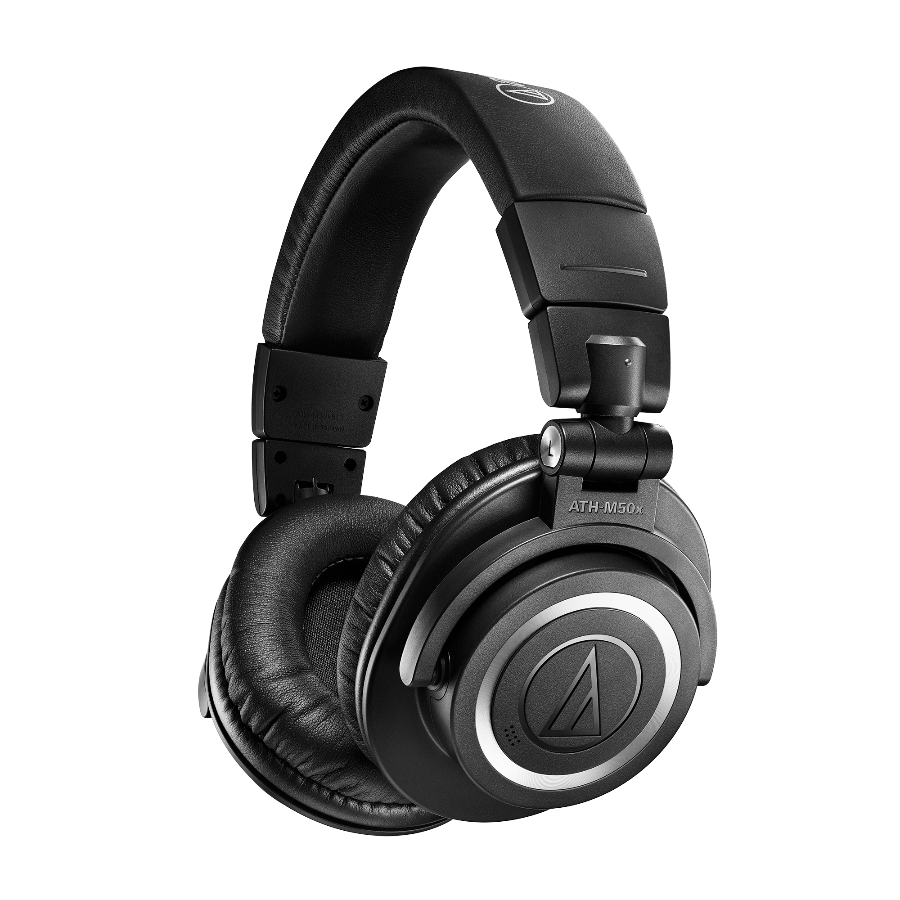

Наш асортимент преміальної техніки
Оберіть найкращі навушники та акустику від провідних світових брендів з офіційною гарантією.
Marshall Major V Black

Країна походження: Швеція (виробництво: Китай)
Основні характеристики:
- Тип підключення: Бездротові (Bluetooth 5.3) / дротові (3.5 мм)
- Час автономної роботи: до 100+ годин відтворення
- Діапазон частот: 20 Гц – 20 000 Гц
- Опір (імпеданс): 32 Ом
- Особливості: Кнопка «M», бездротова зарядка
Sony WH-1000XM5 Silver

Країна походження: Японія (виробництво: Малайзія)
Основні характеристики:
- Тип підключення: Bluetooth 5.2 / 3.5 мм mini-jack
- Шумозаглушення: Активне (ANC) із двома процесорами V1 та QN1
- Час роботи: до 30 годин із увімкненим ANC
- Підтримка кодеків: LDAC, AAC, SBC
- Вага пристрою: 250 г
Sennheiser Momentum 4 Wireless

Країна походження: Німеччина
Основні характеристики:
- Тип випромінювача: Динамічний (42 мм)
- Діапазон частот: 6 Гц – 22 000 Гц
- Автономність: рекордна батарея до 60 годин
- Підключення: Bluetooth 5.2, USB-C аудіо, аналоговий кабель
- Кодеки: aptX Adaptive, aptX, AAC, SBC
Marshall Stanmore III Brown

Країна походження: Швеція
Основні характеристики:
- Форм-фактор: Стаціонарна акустична колонка
- Вихідна потужність: 80 Вт (підсилювачі класу D)
- Діапазон частот: 45 Гц – 20 000 Гц
- Інтерфейси: Bluetooth 5.2, вхід RCA, AUX 3.5 мм
- Керування: Аналогові регулятори тембру та гучності
JBL Charge 5 Squad

Країна походження: США
Основні характеристики:
- Захист від води та пилу: Стандарт IP67
- Потужність: 40 Вт (RMS)
- Час автономної роботи: до 20 годин відтворення
- Функція Powerbank: Зарядка смартфона через USB-A
- Технологія зв'язку: PartyBoost
Audio-Technica ATH-M50xBT2

Країна походження: Японія
Основні характеристики:
- Діаметр випромінювачів: 45 мм з неодимовими магнітами
- Частотна характеристика: 15 Гц – 28 000 Гц
- Автономність: до 50 годин роботи
- Голосові асистенти: Amazon Alexa, Google Assistant
- Вбудований ЦАП: Преміальний аудіочіп AK4331